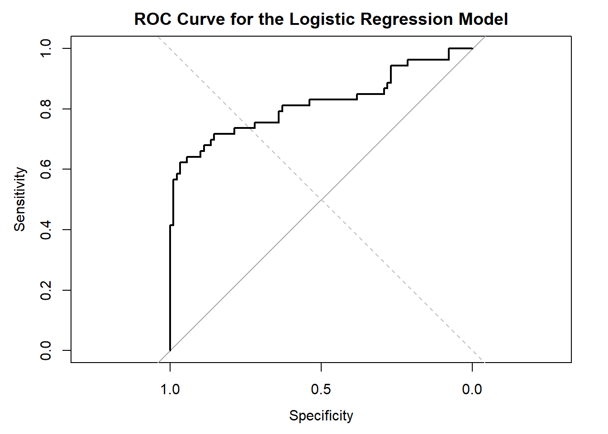
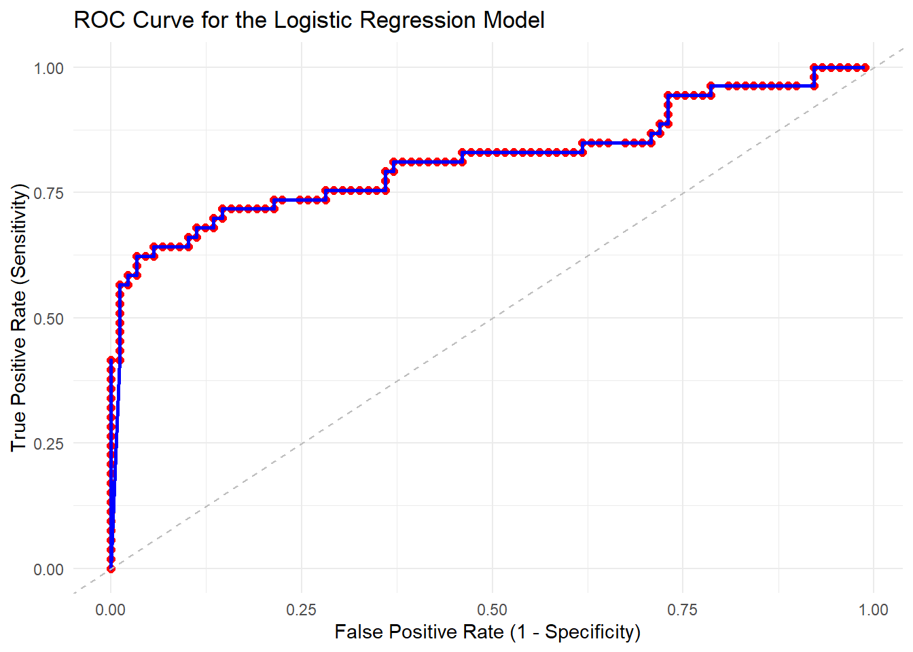
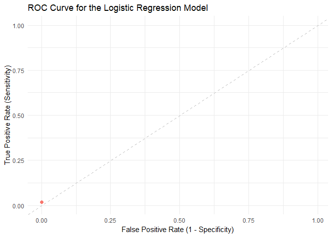

Understanding the Confusion Matrix and ROC Curve in R
혼동이 찾아오는 혼돈행렬
R
ML
Author
Changjun Lee
Published
March 21, 2023
Introduction
In this blog post, we will explore two essential concepts in evaluating classification models: the confusion matrix and the Receiver Operating Characteristic (ROC) curve. We will go through the basics, discuss how to interpret these metrics, and provide R code snippets to create and visualize them using the popular caret and pROC packages. We’ll demonstrate these concepts using the Titanic dataset.
Loading the Titanic Dataset
The Titanic dataset is not available in R by default, but it can be loaded using the titanic package. First, install and load the package:
# Install the titanic package if you haven't already# if (!requireNamespace("titanic", quietly = TRUE)) {# install.packages("titanic")# }# Load the titanic packagelibrary(titanic)library(tidyverse)
── Attaching core tidyverse packages ──────────────────────── tidyverse 2.0.0 ──
✔ dplyr 1.1.0 ✔ readr 2.1.4
✔ forcats 1.0.0 ✔ stringr 1.5.0
✔ ggplot2 3.4.1 ✔ tibble 3.1.8
✔ lubridate 1.9.2 ✔ tidyr 1.3.0
✔ purrr 1.0.1
── Conflicts ────────────────────────────────────────── tidyverse_conflicts() ──
✖ dplyr::filter() masks stats::filter()
✖ dplyr::lag() masks stats::lag()
ℹ Use the conflicted package (<http://conflicted.r-lib.org/>) to force all conflicts to become errors
# Load the Titanic datasetdata("titanic_train")data("titanic_test")# Combine the training and testing datasetstitanic_data <-bind_rows(titanic_train, titanic_test)
Before we proceed, let’s preprocess the dataset by selecting relevant features and handling missing values:
# Select relevant features and remove rows with missing valuestitanic_data <- titanic_data[, c("Survived", "Pclass", "Sex", "Age", "SibSp", "Parch", "Fare")]titanic_data <-na.omit(titanic_data)# Convert the 'Sex' variable to a factortitanic_data$Sex <-as.factor(titanic_data$Sex)
Confusion Matrix
A confusion matrix is a tabular representation of the predictions made by a classification model, showing the number of correct and incorrect predictions for each class. It is a useful tool to evaluate a model’s performance and identify its strengths and weaknesses.
Creating a Confusion Matrix in R
To demonstrate the confusion matrix, we will use the preprocessed Titanic dataset and create a logistic regression model. First, let’s load the required packages and split the dataset into training (80%) and testing (20%) sets:
# Load required packageslibrary(caret)
Loading required package: lattice
Attaching package: 'caret'
The following object is masked from 'package:purrr':
lift
# Split the dataset into training (80%) and testing (20%) setsset.seed(42)train_index <-createDataPartition(titanic_data$Survived, p =0.8, list =FALSE)titanic_train <- titanic_data[train_index, ]titanic_test <- titanic_data[-train_index, ]
Now, let’s create a logistic regression model and make predictions on the test set:
# Create the logistic regression modelmodel <-glm(Survived ~ ., data = titanic_train, family ="binomial")# Make predictions on the test datasetpredicted_probs <-predict(model, titanic_test, type ="response")predicted_classes <-ifelse(predicted_probs >0.5, 1, 0)
Next, we will create the confusion matrix using the caret package:
# Create the confusion matrixcm <-confusionMatrix(table(predicted_classes, titanic_test$Survived))print(cm)
Confusion Matrix and Statistics
predicted_classes 0 1
0 78 17
1 11 36
Accuracy : 0.8028
95% CI : (0.7278, 0.8648)
No Information Rate : 0.6268
P-Value [Acc > NIR] : 4.43e-06
Kappa : 0.5687
Mcnemar's Test P-Value : 0.3447
Sensitivity : 0.8764
Specificity : 0.6792
Pos Pred Value : 0.8211
Neg Pred Value : 0.7660
Prevalence : 0.6268
Detection Rate : 0.5493
Detection Prevalence : 0.6690
Balanced Accuracy : 0.7778
'Positive' Class : 0
Interpreting the Confusion Matrix
The confusion matrix displays the following information:
True Positives (TP): 78, the number of correctly predicted non-survivors (class 0)
True Negatives (TN): 36, the number of correctly predicted survivors (class 1)
False Negatives (FN): 11, the number of non-survivors incorrectly predicted as survivors (class 1)
False Positives (FP): 17, the number of survivors incorrectly predicted as non-survivors (class 0)
Statistics:
Accuracy: 0.8028 (80.28%), the proportion of correct predictions (both true positives and true negatives) among the total number of cases. The 95% CI (confidence interval) for the accuracy is (0.7278, 0.8648), meaning we can be 95% confident that the true accuracy lies within this range.
No Information Rate (NIR): 0.6268, the accuracy that could be obtained by always predicting the majority class (class 0 in this case).
P-Value [Acc > NIR]: 4.43e-06, the p-value for a statistical test comparing the accuracy of the model to the NIR. A small p-value (typically less than 0.05) indicates that the model’s accuracy is significantly better than the NIR.
Kappa: 0.5687, a metric that considers both the true positive rate and the false positive rate, providing a more balanced assessment of the model’s performance. Kappa ranges from -1 to 1, with 0 indicating no better than random chance, and 1 indicating perfect agreement between predictions and true values.
Mcnemar's Test P-Value: 0.3447, the p-value for a statistical test comparing the number of false positives and false negatives. A large p-value (typically greater than 0.05) indicates that there is no significant difference between the number of false positives and false negatives.
Sensitivity, Specificity, and Other Metrics:
Sensitivity (Recall or True Positive Rate): 0.8764, the proportion of actual positive cases (survivors) that were correctly identified by the model.
Specificity: 0.6792, the proportion of actual negative cases (non-survivors) that were correctly identified by the model.
Positive Predictive Value (PPV): 0.8211, the proportion of positive predictions (predicted survivors) that were actually positive (true survivors).
Negative Predictive Value (NPV): 0.7660, the proportion of negative predictions (predicted non-survivors) that were actually negative (true non-survivors).
Prevalence: 0.6268, the proportion of the true positive cases (survivors) in the dataset.
Detection Rate: 0.5493, the proportion of true positive cases that were correctly detected by the model.
Detection Prevalence: 0.6690, the proportion of cases predicted as positive (survivors) by the model.
Balanced Accuracy: 0.7778, the average of sensitivity and specificity, providing a balanced assessment of the model’s performance across both classes.
The ‘Positive’ class is set to 0 (non-survivors) in this analysis.
ROC Curve
The Receiver Operating Characteristic (ROC) curve is a graphical representation of a classifier’s performance across all possible decision thresholds. It plots the True Positive Rate (TPR, also known as sensitivity or recall) against the False Positive Rate (FPR, or 1 - specificity) at various threshold settings.
Creating an ROC Curve in R
To create an ROC curve, we will use the pROC package. First, let’s install and load the required package:
# Install the pROC package if you haven't already# if (!requireNamespace("pROC", quietly = TRUE)) {# install.packages("pROC")# }# Load the pROC packagelibrary(pROC)
Type 'citation("pROC")' for a citation.
Attaching package: 'pROC'
The following objects are masked from 'package:stats':
cov, smooth, var
Now, let’s create the ROC curve using the predicted probabilities from our logistic regression model:
# Create the ROC curveroc_obj <-roc(titanic_test$Survived, predicted_probs)
Setting levels: control = 0, case = 1
Setting direction: controls < cases
# Plot the ROC curveplot(roc_obj, main ="ROC Curve for the Logistic Regression Model")abline(0, 1, lty =2, col ="gray") # Add a reference line for a random classifier

Interpreting the ROC Curve
The ROC curve helps us visualize the trade-off between sensitivity (True Positive Rate) and specificity (1 - False Positive Rate) for various threshold values. A perfect classifier would have an ROC curve that passes through the top-left corner of the plot (100% sensitivity and 100% specificity). In contrast, a random classifier would have an ROC curve that follows the diagonal reference line (gray dashed line in our plot).
The area under the ROC curve (AUC) is a scalar value that summarizes the performance of the classifier. An AUC of 1.0 indicates a perfect classifier, while an AUC of 0.5 suggests that the classifier is no better than random chance. We can calculate the AUC using the auc function from the pROC package:
# Calculate the AUCauc_value <-auc(roc_obj)cat("AUC:", auc_value, "\n")
AUC: 0.8181047
Let’s go through the process of drawing dots and lines in the ROC curve step by step.
Understand the components of the ROC curve: The ROC curve consists of several points (dots) that represent the true positive rate (sensitivity) and false positive rate (1 - specificity) at various decision thresholds. To draw the curve, you need to connect these points with lines.
Determine decision thresholds: You must first identify the decision thresholds you want to use. These thresholds represent the probability cut-off points for classifying an observation as positive or negative. In most cases, you can use the unique predicted probabilities in your dataset as the thresholds.
# Extract unique predicted probabilitiesthresholds <-unique(predicted_probs)# Sort the thresholds in descending orderthresholds <-sort(thresholds, decreasing =TRUE)
Calculate TPR and FPR for each threshold: For each threshold, calculate the true positive rate (sensitivity) and false positive rate (1 - specificity).
# Initialize empty vectors for TPR and FPRtpr <-numeric(length(thresholds))fpr <-numeric(length(thresholds))# Calculate TPR and FPR for each thresholdfor (i inseq_along(thresholds)) { threshold <- thresholds[i]# Classify observations based on the current threshold predicted_classes <-as.integer(predicted_probs >= threshold)# Create a confusion matrix cm <-table(Predicted = predicted_classes, Actual = titanic_test$Survived)# Calculate TPR and FPRif(sum(dim(cm))==4){ tpr[i] <- cm["1", "1"] / (cm["1", "1"] + cm["0", "1"]) fpr[i] <- cm["1", "0"] / (cm["1", "0"] + cm["0", "0"]) }}
Plot the ROC curve: Now that you have calculated the TPR and FPR for each threshold, you can plot the ROC curve by connecting the dots (points) with lines.
# Create a data frame for plottingroc_df <-data.frame(Threshold = thresholds, TPR = tpr, FPR = fpr)# Create the ROC plotroc_plot <-ggplot(roc_df, aes(x = FPR, y = TPR)) +geom_point(size =2, color ="red") +# Add points (dots)geom_line(color ="blue", size =1) +# Connect the points with linesgeom_abline(intercept =0, slope =1, linetype ="dashed", color ="gray") +labs(title ="ROC Curve for the Logistic Regression Model",x ="False Positive Rate (1 - Specificity)",y ="True Positive Rate (Sensitivity)" ) +theme_minimal()
Warning: Using `size` aesthetic for lines was deprecated in ggplot2 3.4.0.
ℹ Please use `linewidth` instead.
# Display the plotprint(roc_plot)

This will create an ROC curve with dots (points) representing each decision threshold and lines connecting these dots. The resulting plot allows you to visualize the trade-offs between sensitivity and specificity at various threshold settings.
Let’s see the process of drawing the ROC curve step by step.
library(gganimate)animated_roc_plot <-ggplot(roc_df, aes(x = FPR, y = TPR)) +geom_point(aes(group =seq_along(Threshold), color =as.factor(seq_along(Threshold))),size =2, show.legend =FALSE) +geom_line(aes(group =seq_along(Threshold), color =as.factor(seq_along(Threshold))),size =1, show.legend =FALSE) +geom_abline(intercept =0, slope =1, linetype ="dashed", color ="gray") +labs(title ="ROC Curve for the Logistic Regression Model",x ="False Positive Rate (1 - Specificity)",y ="True Positive Rate (Sensitivity)" ) +theme_minimal() +transition_states(states =seq_along(roc_df$Threshold), transition_length =2, state_length =1) +enter_fade() +exit_fade() +shadow_mark(alpha =0.5, size =1) # Add the trajectory# Display the animated plotanimate(animated_roc_plot, nframes =200, end_pause =50)

Conclusion
In this blog post, we have explored the confusion matrix and ROC curve as valuable tools for evaluating classification models. We demonstrated how to create and interpret these metrics using R code snippets and the Titanic dataset. With a solid understanding of these concepts, you can better assess the performance of your classification models and make informed decisions about model selection and tuning.